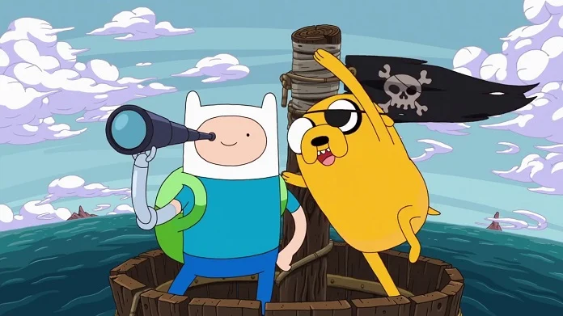
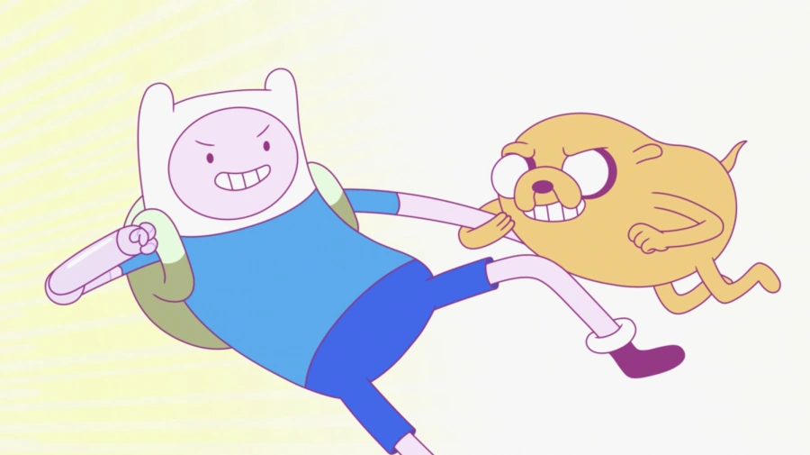
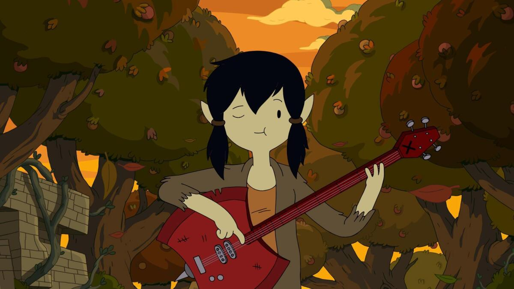
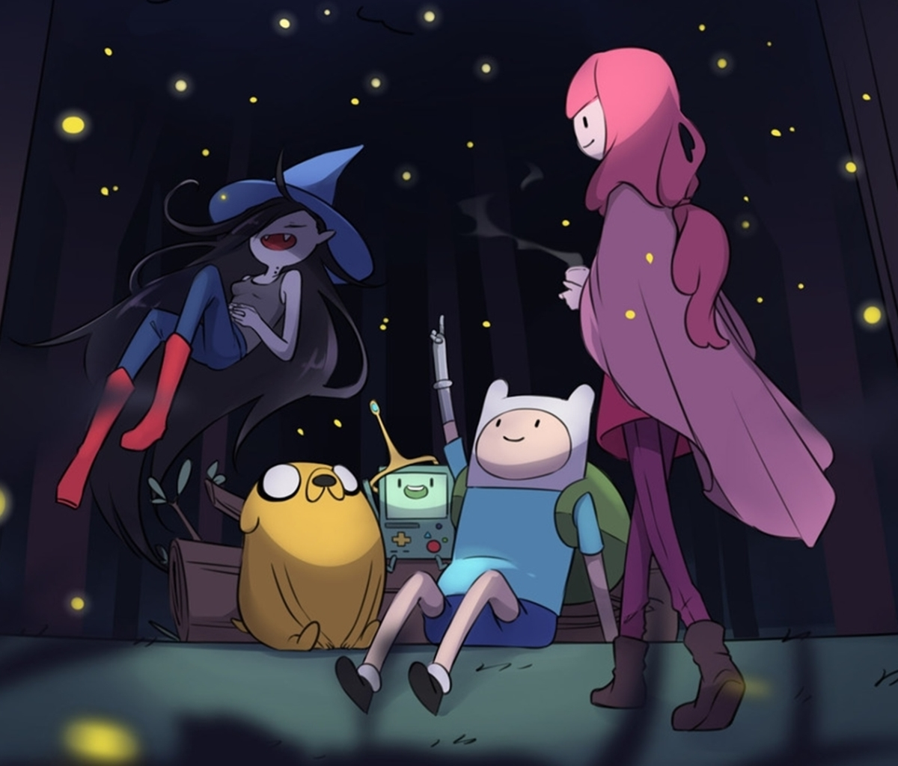
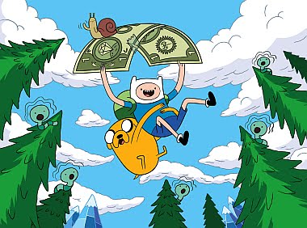
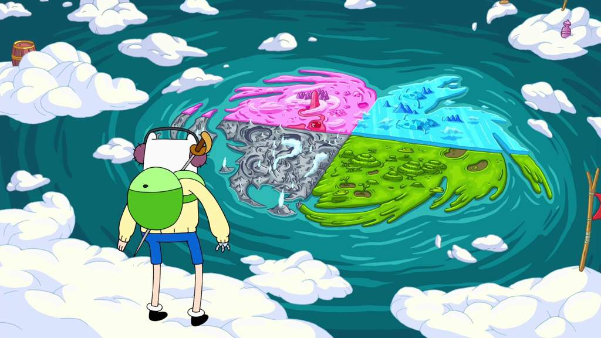
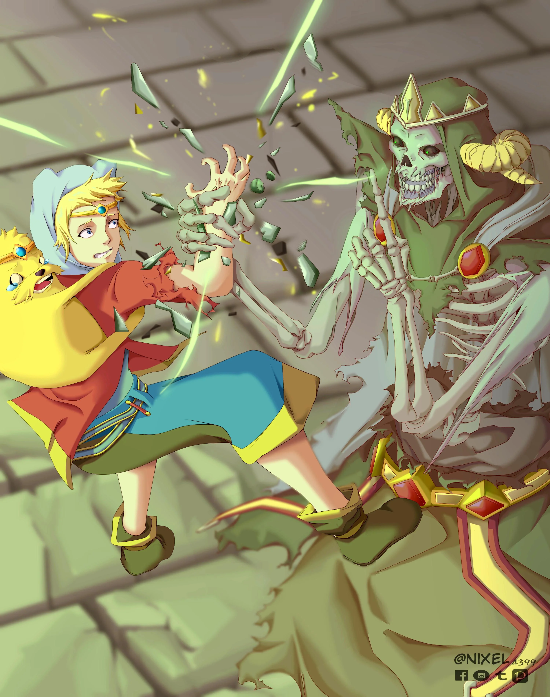
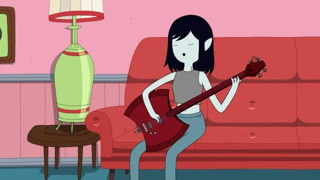

"Hora de Aventura" é uma série de animação que segue as aventuras de Finn, o humano, e Jake, o cão, enquanto eles exploram a Terra de Ooo e enfrentam vilões, desafios e muitos personagens excêntricos.
Personagens Principais:
Finn - O último humano vivo, corajoso e sempre pronto para a aventura.
Jake - O cão mágico com o poder de esticar e mudar sua forma.
Princesa Jujuba - A princesa do Reino Doce, inteligente e estrategista.
Marceline - A vampira e música, que adora rock e tem uma personalidade irreverente.
BMO - Um robô que é um jogo e amigo do Finn e do Jake.
Imagens do Show

Finn e Jake em uma das suas aventuras.

Uma cena épica de Finn e Jake.

Marceline, a vampira, com sua guitarra.

Finn e Jake com Marceline, Princesa Jujuba e BMO.
Finn e Jake descansando.
Finn e seus amigos.

Finn se preparando para uma nova aventura.

Uma cena da Terra de Ooo, o cenário das aventuras.

Finn e Jake enfrentando um vilão poderoso.

Marceline, a vampira, cantando suas músicas de rock.
Informações sobre a Série
1. Gênero da série: "Hora de Aventura" é uma série de animação de comédia e fantasia.
2. Criadores: A série foi criada por Pendleton Ward, ex-animador da Cartoon Network.
3. Estreia: A série estreou em 2010 no canal Cartoon Network.
4. O Mundo de Ooo: A Terra de Ooo é um lugar pós-apocalíptico, onde os personagens vivem e se aventuram.
5. Tema central: A série explora a amizade, aventura, e o crescimento pessoal de Finn e Jake.
6. A série tem uma forte influência do surrealismo: A série combina elementos de fantasia com um humor peculiar e surreal, criando um universo único.
7. A evolução de Finn: Ao longo da série, Finn cresce de um adolescente impulsivo para um herói mais reflexivo e maduro.
8. A música: Marceline, uma das personagens principais, é uma famosa cantora de rock, e suas canções são um dos destaques da série.
9. Relação de Finn e Jake: A amizade entre Finn e Jake é central para a série, sendo um reflexo da importância da camaradagem.
10. Influência cultural: "Hora de Aventura" teve um grande impacto cultural, sendo aclamada por sua criatividade, personagens profundos e abordagens inesperadas de temas como a vida e a morte.
Links Úteis
Para mais informações sobre a série, visite o site oficial da Cartoon Network: